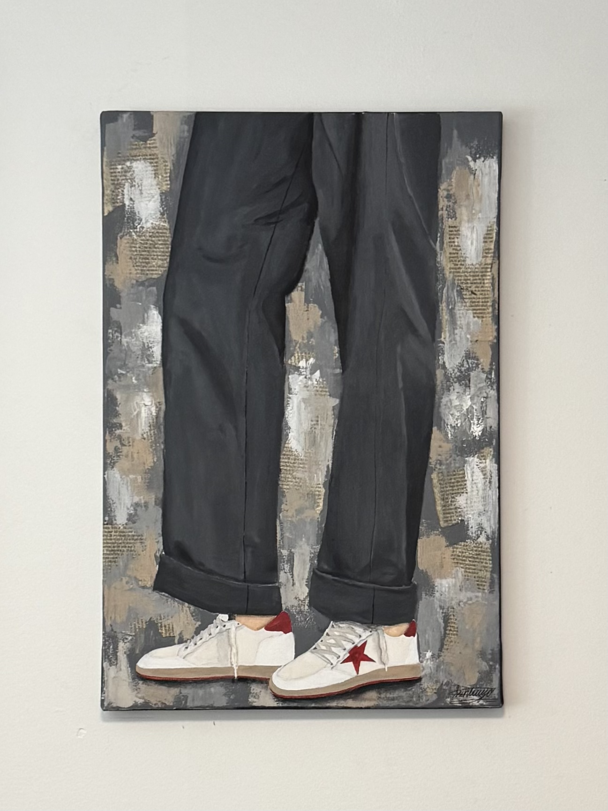

THE RED SHOES
This painting was done with acrylic paint and gesso to give it volume. I was inspired by a pair of shoes I had which were my favorite until they were too worn out for me to use them, although I wanted to keep them in my room
